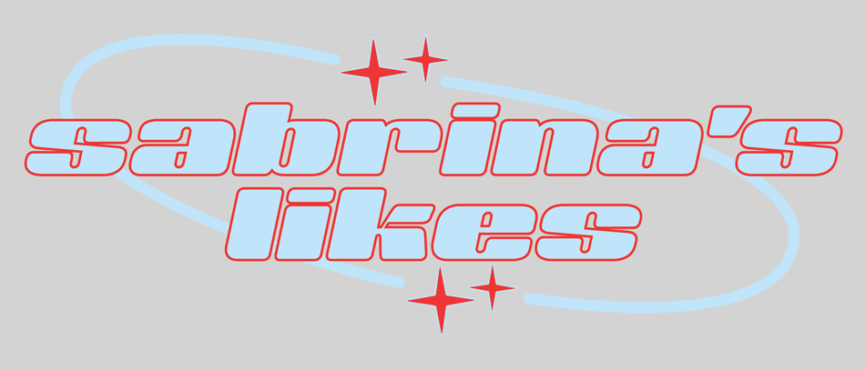

As mentioned in before, Sabrina LOVES watching a variety of dating-reality shows. Love is BlindLove is Blind is a show that focuses on 15 women and 15 men who try and find the love of their life without ever seeing each other. The only time they’ll be allowed to see each other is when they come out as an engaged couple. This show is definitely more on the “authentic” side since the contestants seem like your everyday people who come from different backgrounds which makes the show feel more real. and Love Island Sabrina watches Love Island for the drama. The contestants in Love Island are either influencers, models, or aspiring-models which is why the show could seem less authentic. It’s still really entertaining and if you enjoy drama and love then Love Island is a place to start. are just the few dating-reality shows that she watches, but both these shows are her favorite! The House of Secrets The 3-part series uncovers the truth of the 11 deaths that happened in a single household is a Netflix Original docu-series that focuses on the real life case of the Burari Deaths that happened in India on July 1, 2018. Sabrina’s an avid fan of crime/mystery shows and The House of Secrets definitely is on the top of her list! Moving on to another genre that Sabrina loves, she also enjoys anime! She’s currently watching Demon Slayer.It’s about two siblings, Tanjiro and Nezuko, who’s family were attacked by demons. However, Nezuko has also turned into a demon so Tanjiro sets out to become a demon slayer to avenge his family and cure his sister. and it's also on the top of Sabrina’s list of anime because not only is the storyline really interesting, but the art of the show’s incredible also! If you’re interested in watching an anime show then she recommends this show!